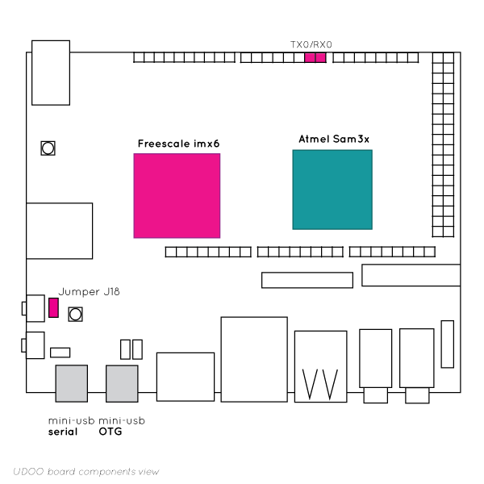

UDOO Quad/Dual Documentation
UDOO Quad/Dual Documentation
IMX6 And Sam3X Communication
UDOO DUAL/QUAD features a powerful IMX6 ARM Cpu , which can execute all the piece of code you want, from simple word-processing to power-hungry 3d modeling tasks. Furthermore, it has a built-in Arduino Due compatible range of GPIOs and it's layout is perfectly compatible with all Arduino Due shields. In this tutorial we'll learn how to take advantage of both these platforms at the same time, how to make them interact and talk to each others.
First, let's have a look on how UDOO DUAL/QUAD's architecture has been designed. As you may know, on the board we find 2 processors:

- iMX6 - ARM CPU Dual/Quad Core: This is the powertrain of UDOO DUAL/QUAD's operating system. This CPU handles the O.S. environments, such as Android, Ubuntu, Debian etc. iMX6 handles also AudioVideo operations ( audio io, HDMI video, LVDS), USB ports, SATA connection, Network connection and so on.
- SAM3x - Arduino Due compatible processor: This is the core of UDOO DUAL/QUAD's extended input and output support. You can use the Sam3x as a standalone Arduino board, connecting every sensor, motor , device etc. you want to it. You can also connect every Arduino Due compatible shield you may need for your project. UDOO DUAL/QUAD features a serial channel that interconnects these 2 processors, and this is the way to go for advanced projects. The logical steps involved are really simple:
How the two processors communicate?
Below there are the possible connections between the two processors, explained and illustrated in an easy and intelligible way.
Communication between i.MX6 and SAM3X through UART serial
Between the two processors there’s a direct UART serial connection which is always ON. Through this connection, you can, for example, upload your sketches to the SAM3X from the iMX6 running Linux within the Arduino IDE. In other words, through this serial connection, the two processor communicate directly between them. Like any other Arduino boards, serial data are also available at pin 0 and pin 1
OTG connection between i.MX6 and SAM3X
This USB OTG connection is used, for example, for the ADK communication protocol between the iMX6 running Android and the SAM3X. In this way UDOO can act as an Android-powered device and its ADK accessory simultaneously. This connection can also be used to connect the iMX6 to the SAM3X while running Linux. The switch is controlled via software by the iMX6.
Connection to the i.MX6 through UART serial from external computer
Serial connection to the iMX6 from an external computer through USB serial. With this connection you have access, for example, to the iMX6 U-BOOT. The switch is controlled via software by the iMX6 or by a physical jumper (J18). With the J18 jumper plugged you can communicate with the iMX6 processor through the micro-USB connector CN6.
Connection to the SAM3X from external computer
Arduino compatible board embedded on UDOO can be also programmed from an external computer through the mini USB serial, like you are used to do with standard Arduino board. Like any other Arduino boards, serial data are also available at pin 0 and pin 1 (RX0/TX0). The switch is controlled via software by the iMX6 or by a physical jumper (J18). With the J18 jumper NOT plugged you can communicate with the Arduino SAM3X processor through the micro-USB connector CN6.
External OTG connection to i.MX6
The mini USB OTG, when switched to the iMX6 OTG BUS, can be used, for example, to communicate with UDOO as an Android device. This way you can use ADB protocol, install APKs, debugging purposes and all other uses of an OTG port on an Android device. While running Linux this is a standard USB OTG port. The switch is controlled via software by the iMX6.
Communication Examples
Both processors can listen and send data via the serial line, the only thing you need is check that they communicate at the same baudrate. So, you can tie up two different scripts or events manager, on both processors, and make them react the way you want.
To have full examples of communication in different programming languages (Java, C, PHP, Python) go to the Serial libraries examples
Let's view some bash scenarios:
Unidirectional Communication from Linux to Arduino
The Arduino part will turn on a LED when a script is launched on the Linux OS running on the iMX6 part
In this scenario, the first step is to properly set the serial port on Linux:
stty -F /dev/ttymxc3 cs8 115200 ignbrk -brkint -icrnl -imaxbel -opost -onlcr -isig -icanon -iexten -echo -echoe -echok -echoctl -echoke noflsh -ixon -crtscts
As you may imagine, /dev/ttymxc3 is the serial port and 115200 is the baudrate we selected.
Then, we just set up our script. This will write the desired data on to the serial port.
Now, we step up into the Sam3x part and upload our sketch. The sketch will listen the serial port, at the previously set baudrate, waiting for the information sent by the iMX6. Of course our sketch will have a trigger command set accordingly to the script we set on the iMX6.
Let's see a brief example: I have a python script, that writes "1" on /dev/ttymxc3 when a keyboard button is pressed. I properly set the serial port, at 115200 with the script:
stty -F /dev/ttymxc3 cs8 115200 ignbrk -brkint -icrnl -imaxbel -opost -onlcr -isig -icanon -iexten -echo -echoe -echok -echoctl -echoke noflsh -ixon -crtscts
I upload a sketch that listen on the serial port, and when it receives "1", it will turn a LED to HIGH state. I launch my python script. Which starts waiting for a key to be pressed. Sam3x is listening. When I press a key, a series of events will take place, ultimately resulting in my Led turning on: KEY -> Pyhton script writes 1 on serial -> SAM3x gets triggered and turns on the LED This is of course a very simple scenario, almost the simples you can get. But the logical pathway we examined is pretty the same when you climb up on complexity.
Unidirectional Communication from Arduino to Linux
Now, let's examine the opposite scenario:
A Linux application will output some data gathered from sensors connected to the Sam3x via an Arduino sensor shield
Again, what we need to do is set our serial port accordingly to the baudrate set by the sketch. The SAM3x will collect some data from it's sensors, and send them, appropriately coded, via serial. On the Linux Side, we can set up a local server that listens for serial data and stores it on a local database, for example a mysql db. Or that outputs a video feedback if a certain data comes from the sensor reading.
Again, let's see a brief example: I have a sensor that reads environmental data, such as temperature and atmospheric pressure. I upload my Arduino sketch, that will send both of these readings via serial every 1 second. I set serial port baud rate at 115200 To match SAM3x serial speed, II properly set the serial port at 115200 on the iMX6 with the script:
stty -F /dev/ttymxc3 cs8 115200 ignbrk -brkint -icrnl -imaxbel -opost -onlcr -isig -icanon -iexten -echo -echoe -echok -echoctl -echoke noflsh -ixon -crtscts
We set up a server that both listens to the data sent from Serial, and stores them on a mysql database. Furthermore, we can set up a script that pops-up a video alert if certain values are read from the sensors. Again, this basic principle can be expanded to create more complex situations. This is up to you and your creativity. The ultimate scenario is however the bidirectional communication, that occurs when both systems reads and listens reciprocally.
Bidirectional communication
As a mere example, we can merge the above scenarios into one integrated application: I have a sensor that reads environmental data, such as temperature and atmospheric pressure. I upload my Arduino sketch, that will send both of these readings via serial every 1 second. I set serial port baud rate at 115200 To match SAM3x serial speed, we properly set the serial port at 115200 on the iMX6 with the script:
stty -F /dev/ttymxc3 cs8 115200 ignbrk -brkint -icrnl -imaxbel -opost -onlcr -isig -icanon -iexten -echo -echoe -echok -echoctl -echoke noflsh -ixon -crtscts
We set up a server that both listens to the data sent from Serial, and stores them on a mysql database.
Then, I can choose to output the mean averages of temperature and atmospheric pressure with an LED array connected to the Arduino part. I configure the server to write the data to be displayed with the LED array on /dev/ttymxc3, with the same baudrate I set before I integrate the Arduino sketch previously loaded in order to add serial listening and writing on the LED array As you can see, this is a step forward from what we've previously seen as the system is using the serial connection as a bidirectional communication pathway, and the Linux system and Arduino sketch are also both receiving and sending data at the same time. Again, you can add even more complexity layers, UDOO DUAL/QUAD can handle them.
Last but not least, UDOO DUAL/QUAD is also capable of driving its GPIO pins as other embedded boards, like Raspberry Pi, the direct way. This is the simplest way of controlling them, but bear in mind that this procedure enables you to control them only via the Linux or Android iMX6 system. This offers another interesting scenario:
Controlling GPIO via iMX6 while they are also drived by SAM3x Arduino compatible controller
WARNING: Setting up the same pin on different states in the same time, or controlling it at the same time with both iMX6 and SAM3x will result in damaging your board. Please make sure a pin/GPIO can have only one state at the same time, and it's controlled only by one processor at the time
This allows to conveniently control the GPIOs for iMX6 related tasks, while letting Arduino do its job with a custom sketch. Let's see an example: I have an audio player running on Linux, and want to output artist and song name on a Oled display drived via i2c protocol (iMX6 direct GPIO handling) At the same time I can connect a rotary controller to SAM3x to control the output volume via an analog knob. I upload a sketch that reads the volume knob position and writes it to serial (Arduino to iMX6 via serial) I start a script on iMX6 that reads the volume knob position and tunes the volume mixer accordingly.